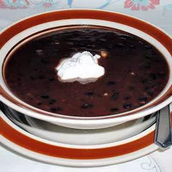

Quick Black Bean Soup

Description
This is a recipe from a cookbook by Dean Ornish
Ingredients
- 1 cup diced onion
- 2 cloves garlic minced
- 1 1/4 cups vegetable broth
- 2 15oz cans black beans
- 1 15oz can diced tomatoes
- 1 cup diced peeled russet-type potatoes
- 1/2 teaspoon dried thyme
- 1/2 teaspoon dried cumin
- 1/2 teaspoon Tabasco sauce
- Diced red onion or cilantro
Directions
- Combine the onion, garlic, and 1/4 cup vegetable broth in a large pot
- Bring to a simmer until onions are softened, about 5 minutes
- Add 1 cup of broth, black beans with their juice, tomatoes, potatoes, thyme, and cumin.
- Bring to a simmer, cover, adjust heat to maintain a simmer, and cook until potatoes are tender, about 25 minutes.
- Thin soup if necessary with a little more vegetable broth.
- Add Tabasco. Taste and adjust seasoning. Serve hot, topping each portion with some of the onion and herbs, or pass the garnishes separately at the table.